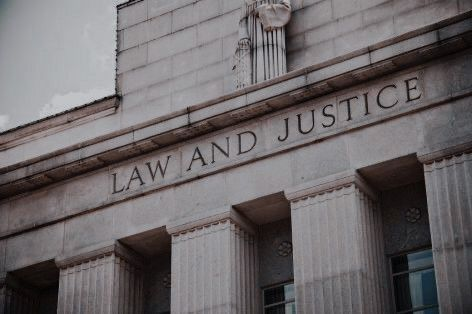
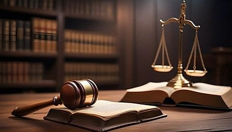

Introduction to Criminal Justice
Criminal Justice is the system that deals with crime, law enforcement, public safety, and the legal process. It plays an essential role in maintaining order, protecting citizens, and ensuring fairness under the law. From police work to courtroom decisions, every part of this field works together to keep society safe.
Main Areas of Criminal Justice
- Law Enforcement — Police officers, investigators, and patrol units who enforce the law and protect communities.
- The Court System — Judges, attorneys, and juries who determine guilt or innocence through a fair legal process.
- Corrections — Prisons, rehabilitation programs, parole, and probation that help manage offenders.
- Forensic Science — Crime scene investigation, lab analysis, and evidence examination using scientific methods.
Why Criminal Justice Matters
- It protects people from crime and harm
- It ensures fairness and justice for everyone
- It investigates and solves crimes using modern methods
- It helps rehabilitate offenders and reduce future crime
- It supports victims and upholds human rights
Career Paths in Criminal Justice
- Police officer or detective
- Forensic laboratory specialist
- Corrections officer or probation officer
- Criminal lawyer or paralegal
- Federal agent (FBI, DEA, DHS, etc.)
- Security and crime prevention roles
Learn More
Discover more information about laws, criminal procedures, and public safety from trusted sources:
U.S. Department of Justice
Federal Bureau of Investigation
National Institute of Justice